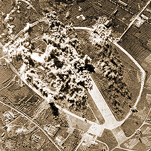
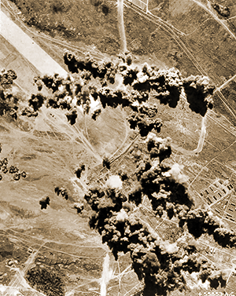

|
j
a v a s c r i p t |
January 6, 1945
My temperature has been normal since noon yesterday but I still feel extremely weak. Ma finally opened up a three-year-old can of Campbell Vegetable Soup — a real treat. I struggled for half an hour to consume two-thirds of it — my first real meal since New Year's Day. Too weak to run around and observe the raids, I parked myself on a chair at the porch, as if I was at the Palace Theater, and watched the planes come to me. And what a show it was!

Nielson Airfield
Act I began at 0740 when 25 to 30 carrier planes made a pass at the Port Area and airfields. To my astonishment the Alert signaled the end of the raid ten minutes later. Act II began twenty minutes after the first — another short and swift raid with a few bombs, rockets and strafing over the airfields to the accompaniment of antiaircraft.

Clark Field
Act III suddenly came on and I instinctively knew this was the main feature. A muffled din became an ominous throbbing sound that grew louder as the planes neared. I had to get up to see 24 B-24s in formations of fours and fives — all shiny except for two dark ones. As they passed above us heading north, the sun made them sparkle like gems in a sea of blue. All the antiaircraft batteries opened up to no avail. An hour later they returned from bombing Clark — all 24 of them. Another 25 to 30 planes came by at 1330 and gave Grace Park airfield a pasting. Two more waves returned later to give Nielson then Camp Murphy the same. And so the day passed. Tribune: "Foe carrier, 2 warships sunk west of Panay" — by 3 planes of the 'Issei' kamikaze group — all "blitz-sunk," according to Daihon-ei, who also claimed the downing of 26 out of 80 planes of the task force northwest of Sumatra. The two warships are believed to be battleships or cruisers. "Losses on our side were of the slightest." |
|
|
|
|